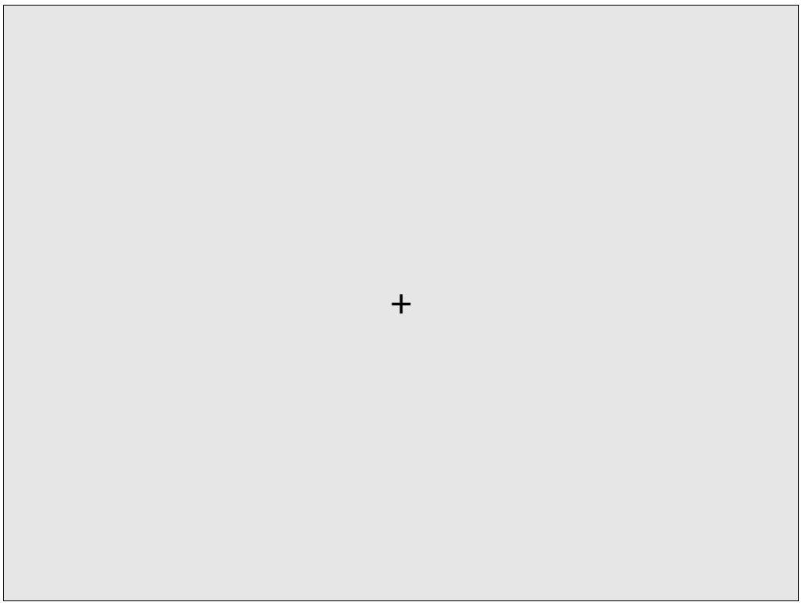
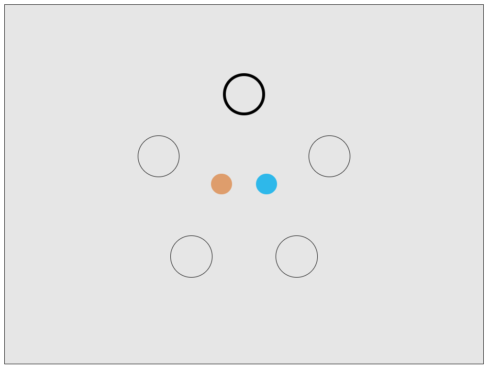
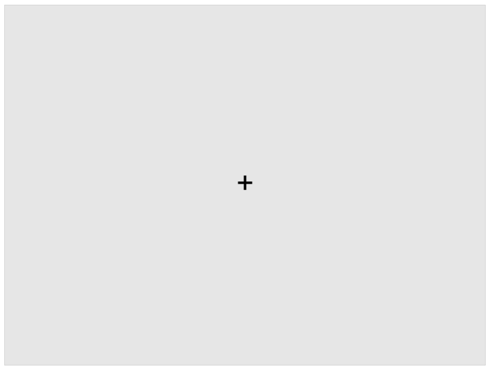
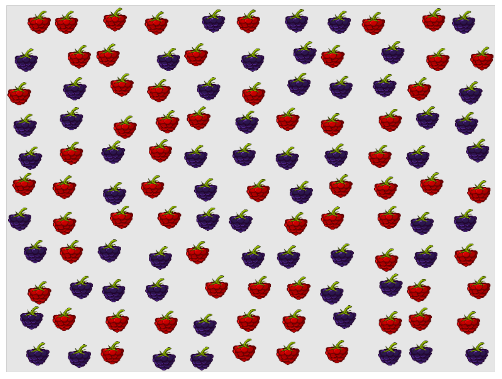
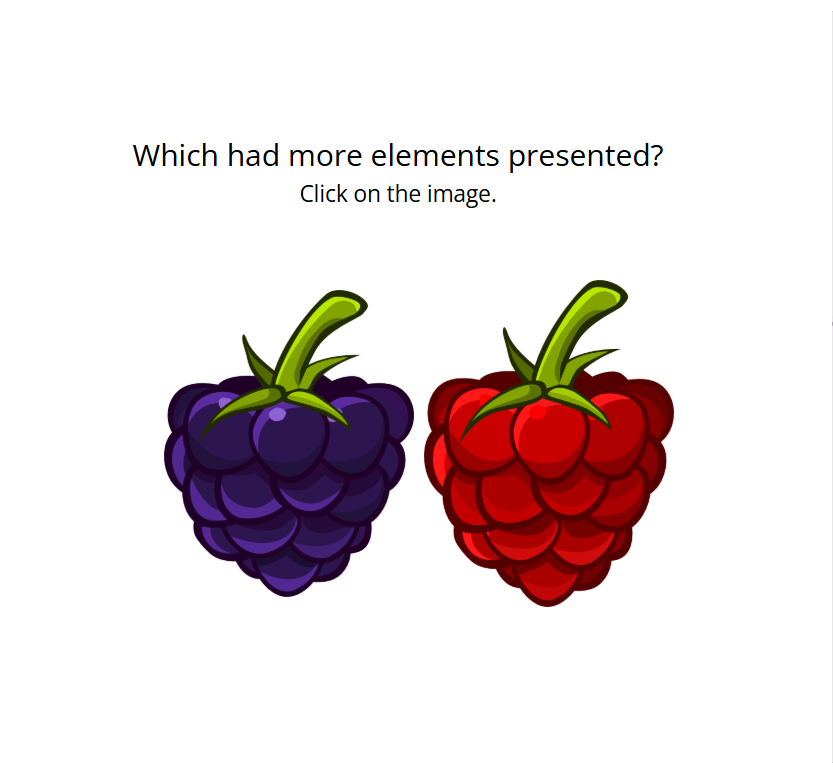
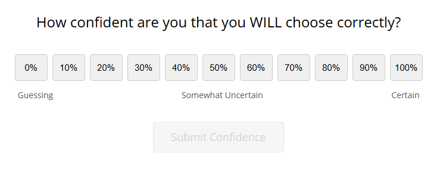
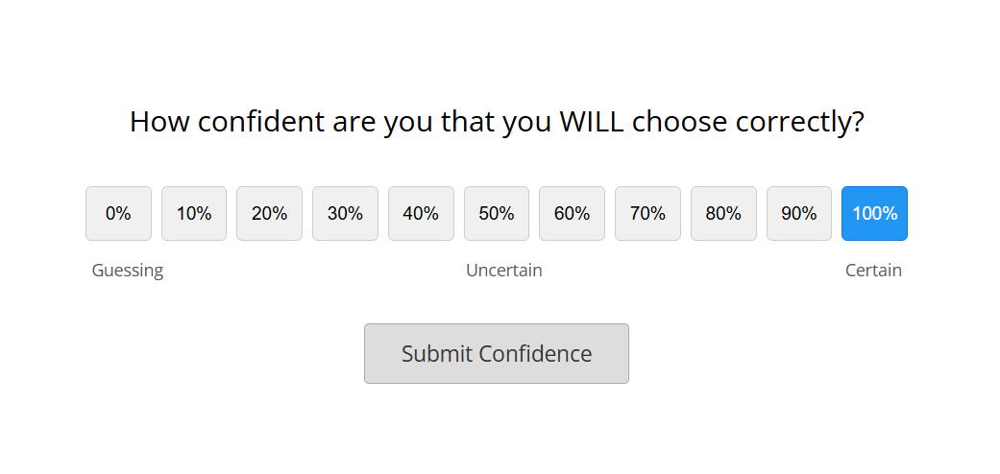
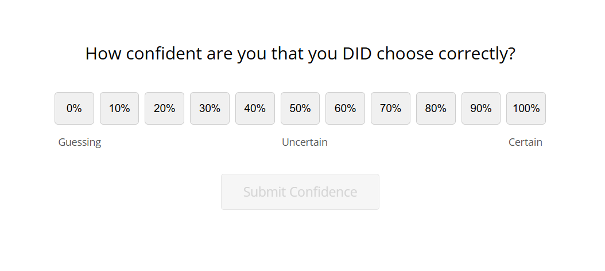
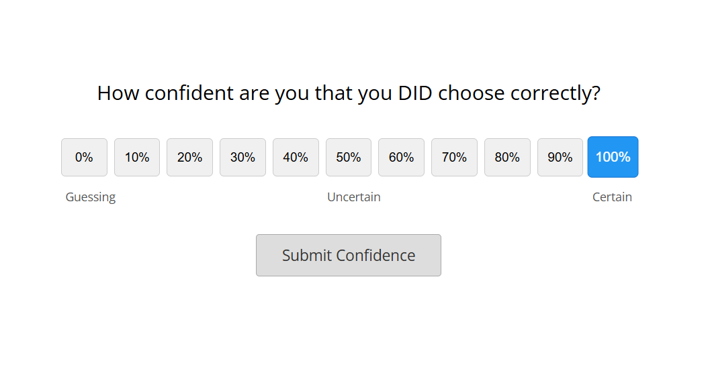

<!DOCTYPE html>
<html>
<head>
    <link rel="stylesheet" href="plugins/jsPsych7.3/jspsych.css">
    <link rel="icon" type="image/png" href="favicon.png">

    <style>
        .jspsych-btn {
            margin-bottom: 10px;
        }

        .jspsych-instructions-nav {
            margin-bottom: 100px;
        }

        #consentDiv {
            font-size: 9pt;
            text-align: justify;
        }
    </style>

    <script src="plugins/jsPsych7.3/jspsych.js"></script>
    <script src="plugins/jsPsych7.3/plugin-survey-text.js"></script>
    <script src="plugins/jsPsych7.3/plugin-html-slider-response.js"></script>
    <script src="plugins/jsPsych7.3/plugin-html-keyboard-response.js"></script>
    <script src="plugins/jsPsych7.3/plugin-html-button-response.js"></script>
    <script src="plugins/jsPsych7.3/plugin-canvas-button-response.js"></script>
    <script src="plugins/jsPsych7.3/plugin-external-html.js"></script>
    <script src="plugins/jsPsych7.3/plugin-instructions.js"></script>
    <script src="plugins/jsPsych7.3/plugin-survey-multi-choice.js"></script>
    <script src="plugins/jsPsych7.3/plugin-survey-html-form.js"></script>
    <script src="plugins/jsPsych7.3/plugin-fullscreen.js"></script>
    <script src="plugins/jsPsych7.3/plugin-preload.js"></script>
    <script src="plugins/jsPsych7.3/plugin-call-function.js"></script>
    <script src="plugins/plugin-survey-template.js"></script>
    <script src="https://unpkg.com/@jspsych-contrib/plugin-pipe@0.4"></script>
    <script src="plugins/plugin-ensemble-flashing.js"></script>
    <script src="plugins/jspsych-continuous-color-wm.js"></script>
    <script src="surveys/docs_updated.js"></script>
    <script src="surveys/phq4.js"></script>
    <script src="surveys/bcis.js"></script>
    <script src="surveys/msas.js"></script>
</head>
<body>
    <script>

// 1. INITIALIZE JSPSYCH (Once at the top)
var jsPsych = initJsPsych({
    show_progress_bar: true,
    auto_update_progress_bar: true,
    message_progress_bar: "Progress on entire study:"
});

// ---------------------------------------------------------
// SETTINGS
// ---------------------------------------------------------
const TRAINING_TRIALS = 5; 
const MAIN_TRIALS = 70;     // 
const WM_SET_SIZE = 5;
const NUM_FIXED = 121;       // Fixed numerosity dots
const IMG_A = "assets/black-berry-dark.png";
const IMG_B = "assets/raspberry.png";

const subject_id = jsPsych.randomization.randomID(10);
const filename = `${subject_id}.csv`;

// ---------------------------------------------------------
// COLOR CONVERSION HELPERS
// ---------------------------------------------------------

function lab2rgb(lab){
  var y = (lab[0] + 16) / 116,
      x = lab[1] / 500 + y,
      z = y - lab[2] / 200,
      r, g, b;

  x = 0.95047 * ((x * x * x > 0.008856) ? x * x * x : (x - 16/116) / 7.787);
  y = 1.00000 * ((y * y * y > 0.008856) ? y * y * y : (y - 16/116) / 7.787);
  z = 1.08883 * ((z * z * z > 0.008856) ? z * z * z : (z - 16/116) / 7.787);

  r = x * 3.2406 + y * -1.5372 + z * -0.4986;
  g = x * -0.9689 + y * 1.8758 + z * 0.0415;
  b = x * 0.0557 + y * -0.2040 + z * 1.0570;

  r = (r > 0.0031308) ? (1.055 * Math.pow(r, 1 / 2.4) - 0.055) : 12.92 * r;
  g = (g > 0.0031308) ? (1.055 * Math.pow(g, 1 / 2.4) - 0.055) : 12.92 * g;
  b = (b > 0.0031308) ? (1.055 * Math.pow(b, 1 / 2.4) - 0.055) : 12.92 * b;

  return "rgb(" + (Math.max(0, Math.min(1, r)) * 255) + "," + 
         (Math.max(0, Math.min(1, g)) * 255) + "," + 
         (Math.max(0, Math.min(1, b)) * 255) + ")";
}

function getColor(n) {
    var a = n;
    var b = 40; // Fixed chroma
    var radius = 60; // Fixed lightness
    var deg2rad = Math.PI / 180;
    var a_lab = Math.cos(a * deg2rad) * b;
    var b_lab = Math.sin(a * deg2rad) * b;
    // L=70 is standard for this task usually, adjusting based on common lab color wheels
    return lab2rgb([70, a_lab, b_lab]); 
}

function ColToRGB(n) {
  if(Array.isArray(n)){
    var cols = [];
    for(var i=0; i<n.length; i++){
      cols.push(getColor(n[i]));
    }
    return cols;
  } else {
    return getColor(n);
  }
}

// Capture Subject ID
var subjectID = jsPsych.data.getURLVariable('id') || jsPsych.randomization.randomID(8);
jsPsych.data.addProperties({subject_id: subjectID});

// Helper functions for VWM
function getRandomIntInclusive(min, max) {
    min = Math.ceil(min); max = Math.floor(max);
    return Math.floor(Math.random() * (max - min + 1)) + min;
}
function wrap(v) {
    if (Array.isArray(v)) {
        for (var i=0; i<v.length; i++) {
            if (v[i]>=360) { v[i]-=360; }
            if (v[i]<0) { v[i]+=360; }
        }
    } else {
        if (v>=360) { v-=360; }
        if (v<0) { v+=360; }
    }
    return v;
}
// --- Math Helper for Numerosity ---
function randomNormal(mean, sd) {
    let u = 0, v = 0;
    while(u === 0) u = Math.random(); 
    while(v === 0) v = Math.random();
    let num = Math.sqrt( -2.0 * Math.log( u ) ) * Math.cos( 2.0 * Math.PI * v );
    return num * sd + mean;
}
// --- Break Screen ---
function getBreakTrial() {
    return {
        type: jsPsychHtmlButtonResponse,
        stimulus: `
            <div class="break-text">
                <p>Block Complete!</p>
                <p>Please take a short break (up to 30 seconds).</p>
            </div>
        `,
        choices: ['Continue'],
        trial_duration: 30000,
        response_ends_trial: true
    };
}

// --- Numerosity Generator ---
function createNumerosityBlock(numTrials, timing, isTraining) {
    var block_timeline = [];
    var block_label = isTraining ? 'Num_Training' : 'Num_Main';

    for (var i = 0; i < numTrials; i++) {
        var n = NUM_FIXED;
        
        // Sample Proportion from Normal Distribution (Mean 0.5, SD 0.05)
        // Keep picking a new number until it falls inside 0.40 and 0.60 and not 0.50
        var p;
        do {
            p = randomNormal(0.5, 0.05); 
        } while (p < 0.40 || p > 0.60 || Math.abs(p - 0.5) < 0.01);

        var correct_resp = (p > 0.5) ? 'left' : 'right';

        block_timeline.push({
            type: jsPsychNumerosityEstimationEnsemble,
            stimulus: IMG_A,
            stimulus2: IMG_B,
            proportion_stim1: p,
            numerosity: n,
            left_image: IMG_A,
            right_image: IMG_B,
            stimulus_duration: 1000,
            number_of_frames: 4,
            confidence_timing: timing, 
            feedback: isTraining,      
            correct_response: correct_resp,
            data: { 
                task: block_label, 
                block_type: timing, 
                proportion: p 
            }
        });
    }
    return { timeline: block_timeline };
}

// --- WM Generator ---
function createWMBlock(numTrials, timing, isTraining) {
    var block_timeline = [];
    var block_label = isTraining ? 'WM_Training' : 'WM_Main';
    
    var plugin_timing = (timing === 'before') ? 'before_stimuli' : 'after_probe';

    for(let i=0; i<numTrials; i++) {
        block_timeline.push({
            type: jsPsychContinuousColorWM,
            set_size: WM_SET_SIZE,
            num_placeholders: 5,
            confidence_timing: plugin_timing,
            feedback: isTraining,
            stimulus_duration: 350,
            min_difference: 30,
            color_wheel_num_options: 2, 
            data: { 
                task: block_label, 
                block_type: timing
            }
        });
    }
    return { timeline: block_timeline };
}

// Helper to bundle Instructions + Training + Main + Break
function buildTaskUnit(taskName, timing) {
    var unit = [];
    // 1. Instructions
    var task_html = '';

    if (taskName === 'WM') {
        // --- WORKING MEMORY INSTRUCTIONS ---
        task_html = `
            <div style="max-width: 800px; margin: auto; text-align: left; line-height: 1.6;">
                <h2 style="text-align: center;">Working Memory Task</h2>

                <p>Welcome. In this memory task, you will be asked to remember the color and spatial locations of <strong>${WM_SET_SIZE} circles</strong>.</p>
                <p>You will start each trial, when you are ready, by clicking on a fixation cross presented in the center of the screen, which will look like this:</p>
                <div style="text-align: center; margin: 20px 0;">
                    
                    <p style="font-size: 14px; color: #555;">(Fixation Cross)</p>
                </div>
                <p>The colored circles will be shown very quickly, so make sure you are really ready when you click on the fixaction cross. </p>
                <p>After you click on the fixation cross you will be shown ${WM_SET_SIZE} colored circles. Here is one example of ${WM_SET_SIZE} circles with different colors:</p>
                <div style="text-align: center; margin: 20px 0;">
                    
                    <p style="font-size: 14px; color: #555;">(Target Colors)</p>
                </div>                
                <p>Your task is to remember the circles and their spatial locations the best that you can.</p>
                <p>After a brief delay, you will need to choose the previously seen color (the position of which will be highlighted with a thick black circle) from two alternatives:</p>
                <div style="text-align: center; margin: 20px 0;">
                    
                    <p style="font-size: 14px; color: #555;">(Task Probe)</p>
                </div>
                <p>Here you would need to click on the orange color.</p>
                <p><strong>To start each trial, you must click the BLACK CROSS in the center of the screen.</strong></p>
            </div>
        `;
    } else {
        // --- NUMEROSITY INSTRUCTIONS ---
        task_html = `
            <div style="max-width: 800px; margin: auto; text-align: left; line-height: 1.6;">
                <h2 style="text-align: center;">Numerosity Task</h2>

                <p>Welcome. In this task, you will be asked to judge <strong>which type of berry is higher in number</strong>.</p>
                <p>Each trial will start automatically with a fixation cross presented in the center of the screen, which will look like this:</p>
                <div style="text-align: center; margin: 20px 0;">
                    
                    <p style="font-size: 14px; color: #555;">(Fixation Cross)</p>
                </div>
                <p>The berries will be shown very quickly, so make sure you are paying attention. </p>
                <p>After the fixation cross you will be shown the set of berries. The proportion of berries presented will be the same, however their location will change during the trial. Here is the example:</p>
                <div style="text-align: center; margin: 20px 0;">
                    
                    <p style="font-size: 14px; color: #555;">(Set of Berries)</p>
                </div>
                <p>Your task is to remember which of the two berries had the highest number.</p>
                <p>You will need to choose from two alternatives (red and dark blue). You need to select the one you think had more fruit on the screen.</p>
                <div style="text-align: center; margin: 20px 0;">
                    
                    <p style="font-size: 14px; color: #555;">(Task Probe)</p>
                </div>
                <p>Here you would need to click on red berry.</p>
            </div>
        `;
    }

    unit.push({
        type: jsPsychHtmlButtonResponse,
        stimulus: task_html,
        choices: ['Next'],
        data: { task: 'instructions_task_desc', task_name: taskName }
    });


    // --- CONFIDENCE INSTRUCTIONS ---
    var conf_html = '';
    var conf_color = timing === 'before' ? '#D32F2F' : '#1976D2'; // Red for before, Blue for after
    var time_text = timing === 'before' ? 'BEFORE' : 'AFTER';

    conf_html = ``;

    if (timing === 'before') {
        // --- PROSPECTIVE INSTRUCTIONS ---
        conf_html = `<div style="max-width: 700px; margin: auto; text-align: center; line-height: 1.6;">
            <h2>Confidence Rating</h2>
            <p>You will be shown a scale that looks like this.  We ask you the before you do the trial, you think carefully about how you feel and how confident you are that you will make the correct response on that specific trial. </p>
            <div style="text-align: center; margin: 20px 0;">
            
            <p style="font-size: 14px; color: #555;">(Confidence Scale)</p>
            </div>
            <p>For example, sometimes you might feel that you may not perform as well, so your confidence in your accuracy may be lower. Other times, you may feel that you’ll perform very well and your confidence in your accuracy will be high. You may also experience moderate levels of confidence.  </p>
            <div style="text-align: center; margin: 20px 0;">
            
            <p style="font-size: 14px; color: #555;">(Confidence Report)</p>
            </div>
            <p>In this example, imagine that you feel you will perform very well. You then select the highest possible confidence rating (100% certain).</p>
            <p>We ask that you please think carefully about your confidence on each trial before you begin. Thank you for your participation.</p>

            <p>We will start with ${TRAINING_TRIALS} practice trials with feedback.</p>
        </div>
    `;
    } else {
        // --- RETROSPECTIVE INSTRUCTIONS ---
        conf_html = `<div style="max-width: 700px; margin: auto; text-align: center; line-height: 1.6;">
            <h2>Confidence Rating</h2>
            
            <p>You will be shown a scale that looks like this. We ask you to think carefully about how confident you are that you made the correct response, and use this scale to report on your confidence.</p>
            <div style="text-align: center; margin: 20px 0;">
            
            <p style="font-size: 14px; color: #555;">(Confidence Scale)</p>
            </div>
            <p>For instance, if you feel that you were guessing, you should choose the left hand side of the confidence scale, whereas if you’re certain choose the right hand.  If your confidence is moderate, choose the mid point of the scale. </p>
            <div style="text-align: center; margin: 20px 0;">
            
            <p style="font-size: 14px; color: #555;">(Confidence Report)</p>
            </div>
            <p>In this example, imagine that you feel you will perform very well. You then select the highest possible confidence rating (100% certain).</p>
            <p>We ask that you please think carefully about your confidence when making the responses, and thanks for your participation.”</p>

            <p>We will start with ${TRAINING_TRIALS} practice trials with feedback.</p>
        </div>
    `;
    }

    unit.push({
        type: jsPsychHtmlButtonResponse,
        stimulus: conf_html,
        choices: ['Start Practice'],
        data: { task: 'instructions_confidence', timing: timing }
    });

    // 2. Training Block
    if(taskName === 'WM') {
        unit.push(createWMBlock(TRAINING_TRIALS, timing, true));
    } else {
        unit.push(createNumerosityBlock(TRAINING_TRIALS, timing, true));
    }

    // 3. Main Block Intro
    unit.push({
        type: jsPsychHtmlButtonResponse,
        stimulus: `<p>Practice complete.</p><p>Starting the <strong>Main Block</strong> (${MAIN_TRIALS} trials).</p><p>Feedback is now OFF.</p><p>The block will take less than 10 minutes on average.</p>`,
        choices: ['Start Main Block']
    });

    // 4. Main Block
    if(taskName === 'WM') {
        unit.push(createWMBlock(MAIN_TRIALS, timing, false));
    } else {
        unit.push(createNumerosityBlock(MAIN_TRIALS, timing, false));
    }

    // 5. Break
    unit.push(getBreakTrial());

    return unit;
}

// Generate 'before' maps to Prediction, 'after' maps to Postdiction
var unit_WM_Pre   = buildTaskUnit('WM', 'before');
var unit_Num_Pre  = buildTaskUnit('Numerosity', 'before');
var unit_WM_Post  = buildTaskUnit('WM', 'after');
var unit_Num_Post = buildTaskUnit('Numerosity', 'after');


// RANDOMIZATION LOGIC
// =========================================================================

// A. Shuffle the order of tasks within the "Pre" phase
var pre_phase_blocks = [unit_WM_Pre, unit_Num_Pre];
pre_phase_blocks = jsPsych.randomization.shuffle(pre_phase_blocks); 
var pre_phase_timeline = [].concat(...pre_phase_blocks);

// B. Shuffle the order of tasks within the "Post" phase
var post_phase_blocks = [unit_WM_Post, unit_Num_Post];
post_phase_blocks = jsPsych.randomization.shuffle(post_phase_blocks);
var post_phase_timeline = [].concat(...post_phase_blocks);

// C. Shuffle the global order (Pre-then-Post OR Post-then-Pre)
var global_phases = [
    { type: 'Pre', timeline: pre_phase_timeline },
    { type: 'Post', timeline: post_phase_timeline }
];
global_phases = jsPsych.randomization.shuffle(global_phases);

// ---------------------------------------------------------
// Consent Form
// ---------------------------------------------------------
var consent_general_info = {
    type: jsPsychHtmlButtonResponse,
    stimulus: `
    <div style="text-align: left; max-width: 800px; margin: auto; font-size: 16px;">
    <h3>Information sheet and consent</h3>
    <p>
        <strong>Welcome.</strong>
    </p>
    <p>
        In this task, you will be asked to complete two simple tasks. In one task you’ll need to remember colors over a brief period of time. In a second task, you will need to judge the relative number of a set of objects. During each task, you will also be asked questions about your confidence.
    </p>
    <p>
        At the end of the study you will also be asked to fill out a set of questionnaires. <strong>These questionnaires contain questions that ask about your metacognitive processes in everyday life situations. Some individuals may feel uncomfortable answering these questions.</strong> You can skip any questions you don’t want to answer and can quit the study at any point. If at any point you feel distress, and require assistance please contact the University’s well-being and <a href="https://warwick.ac.uk/services/wss/" title="support">support</a>. 
    </p>
    <p>
    Together, the study should take approximately 45-50 minutes.
    </p>
    </div>
    `,
    choices: ['Next'],
};
var consent_trial_info = {
    type: jsPsychHtmlButtonResponse,
    stimulus: `
    <div style="text-align: left; max-width: 800px; margin: auto; font-size: 16px;">
        <h3>Information sheet and consent</h3>
        <p>
            Please read the following and indicate your agreement by continuing to the next page to start the practice trials:
        </p>
        <p>
            Your participation is completely voluntary. You can withdraw at any time, and for any reason, simply by closing your browser.   You also have the option to do an alternative experiment for credit if you choose not to participate in this one.
        </p>
        <p>
            No identifiable data will be collected from you as part of this study. This means that once your responses have been submitted to the research team, it will not be possible to withdraw this data as your individual responses cannot be identified.
        </p>
        <p>
            Data will be securely stored on University of Warwick computers and will be processed only for the purpose of scientific analysis. Access to the data will be restricted to the investigators listed above. Summaries may be presented at conferences and included in scientific publications. Data will be reviewed on completion of the research, in line with the University of Warwick data retention policy.
        </p>
        <p>
            Please refer to the University of Warwick Research Privacy Notice, which is available <a href = "https://warwick.ac.uk/services/idc/dataprotection/privacynotices/researchprivacynotice" title="here">here</a> or by contacting the Information and Data Compliance Team at infocompliance@warwick.ac.uk.
        </p>
        <p>
            This study has been reviewed and given favourable opinion by the University of Warwick’s Humanities and Social Sciences Research Ethics Committee (HSSREC).
        </p>
        <p>
            If you require further information, please contact Dr. Maria Robinson at maria.robinson@warwick.ac.uk or Daniil Grigorev at daniil.grigorev@warwick.ac.uk
        </p>
        <p>
            Who should I contact if I wish to make a complaint? Any complaint should be addressed to the person below, who is a senior University of Warwick official entirely independent of this study:
        </p>
        <span style="line-height: 0.5; display: inline-block;">
        <p>
            Head of Research Governance
        </p>
        <p>
            Research & Impact Services
        </p>
        <p>
            University House
        </p>
        <p>
            University of Warwick
        </p>
        <p>
            Coventry
        </p>
        <p>
            CV4 8UW
        </p>
        <p>
            Email: researchgovernance@warwick.ac.uk
        </p>
        <p>
            Tel: 02476 575733
        </p>
        </span><br>
        <p>
        If you wish to raise a complaint on how we have handled your personal data, you can contact our Data Protection Officer who will investigate the matter: DPO@warwick.ac.uk.
        </p>
        <p>
        If you are not satisfied with our response or believe we are processing your personal data in a way that is not lawful you can complain to the Information Commissioner’s Office (ICO).
        </p>
        <p>
        Thank you for taking the time to read this concise Participant Information Leaflet. The full consent form is on the next page.
        </p>
    </div>
    `,
    choices: ['Next'],
};

var consent_trial = {
        type: jsPsychHtmlButtonResponse,
        stimulus: `
        <div style="text-align: left; max-width: 800px; margin: auto; font-size: 16px;">
        <h3>Information sheet and consent</h3>
        <p>
        <strong>Consent to Participate in Research</strong>: Maria M. Robinson, Ph.D., is conducting a research study to investigate the origins of metacognition, individual differences, and decision-making. You have been asked to participate because you are over 18 years old. Your participation will last about 40 minutes, with the exact expected timing listed in the task description. 
        </p>
        <p>
        If you agree to participate in this study by accepting this agreement and continuing in the task, the following will happen to you: 1. You will participate in perception and memory tasks in which you will need to make a numerosity judgment or remember simple stimuli, respectively. 2. You will be asked to fill out questionnaires that ask about your feelings, thoughts, and behaviours in everyday life. Note that you can skip any questions you don’t want to answer and quit the study at any point.
        </p>
        <p>
        <strong>RISKS</strong>. You will be required only to continue to interact with your web browser and make responses for a short duration. Thus, no potential risks or discomforts are anticipated except for the possibility that some tasks may be slightly boring. However, there may be risks that are currently unforeseeable.
        </p>
        <p>
        <strong>PAYMENT/REMUNERATION</strong>. In consideration of your time, you will receive payment at the rate described through the recruitment system. Compensation will be cash paid through prolific.co system.
        </p>
        <p>
        <strong>BENEFITS</strong>. There will be no direct benefit to you from these procedures. However, the investigator may learn more about metacognition processes and decision-making. This knowledge may have benefits to society in fields ranging from improving education to decision-making policies in businesses, but these benefits will be indirect.
        </p>
        <p>
        <strong>EXPLANATION</strong>.  The researcher has explained this study to you and answered your questions.  If you have questions about the research or research-related problems, including any adverse events, you may reach Dr. Maria Robinson at maria.robinson@warwick.ac.uk or Daniil Grigorev at daniil.grigorev@warwick.ac.uk
        </p>
        <p>
        <strong>VOLUNTARY NATURE OF PARTICIPATION</strong>.  Participation in research is entirely voluntary.  You may refuse to participate or withdraw at any time without penalty. The alternative to participation is to choose not to participate.
        </p>
        <p>
        <strong>CONFIDENTIALITY</strong>.  Research records will be kept confidential to the extent allowed by law. As with all research, there is also the possibility of loss of confidentiality. Although, we do not aim to store or record personally identifiable data, metadata used by online collecting platform (as prolific) or demographics could indirectly lead to an identification of a participant. Information from participants such as yourself will be identified by a random subject number, which is not associated with your identity, by the researchers, to minimize the potential loss of confidentiality. 
        </p>
        <p>
        Please print a copy of this page for your records.
        </p>
        <p style="text-align: center; font-weight: bold; margin-top: 20px;">
            By clicking "I Agree", you are indicating that you are at least 18 years old, have read this consent form and agree to participate in this research study.
        </p>
                `,
    choices: ['I Agree', 'I Do Not Agree'],
    on_finish: function(data){
        if(data.response == 1){
            jsPsych.endExperiment('You chose not to participate. You may close this window.');
        }
    }
};
var gender_identity = {
    type: jsPsychHtmlButtonResponse,
    stimulus: `
        <div style="text-align: left; max-width: 800px; margin: auto; font-size: 20px;">
        <p><strong>How do you describe your gender identity?</strong>
        </p>
        `,
    choices: ['Man', 'Woman', 'Non-binary', 'In another way', 'Prefer not to answer']
};
var demographics = {
    type: jsPsychSurveyHtmlForm,
    html: `
        <div style="text-align: left; max-width: 800px; margin: auto; font-size: 20px;">
            <label for="age_input" style="font-weight:bold;">What is your age?</label>
            <br><br>
            <input type="number" name="age" id="age_input" min="18" max="100" style="margin-top:5px; padding:5px;" required>
            <br><br>
            <label style="font-size: 16px; cursor: pointer;">
                <input type="checkbox" name="age_prefer_not_say" id="pns_check"> 
                Prefer not to answer
            </label>
            <br><br>
        </div>
    `,
    button_label: 'Continue',
    
    // This function runs when the trial loads
    on_load: function() {
        const ageInput = document.getElementById('age_input');
        const pnsCheck = document.getElementById('pns_check');

        // Listen for changes to the checkbox
        pnsCheck.addEventListener('change', function() {
            if(this.checked) {
                // If checked: Disable the text box and remove 'required' so they can submit
                ageInput.disabled = true;
                ageInput.required = false;
                ageInput.value = ""; // Clear any number they might have typed
                ageInput.style.backgroundColor = "#e0e0e0";
            } else {
                // If unchecked: Re-enable the text box and make it required again
                ageInput.disabled = false;
                ageInput.required = true;
                ageInput.style.backgroundColor = "white";
            }
        });
    },

    data: { task: 'demographics' }
};
var questionnaire_inst = {
    type: jsPsychInstructions,
            pages: [
                '<p><strong>Now you will be given questionnaires that you will be asked to fill out the best that you can.</strong> These questionnaires contain questions that ask about your feelings, thoughts and behaviours.</p>' +
                '<p>Some questions ask about negative feelings that you might experience, or negative thoughts you might have – so, some individuals may feel uncomfortable answering these questions. You can skip any questions you don’t want to answer and can quit the study at any point. Should you need assistance, there will also be a link with each survey like the one shown below. Thank you for your participation! </p>'
            ],
    show_clickable_nav: true
};


// DATA SAVING 
const save_data = {
            type: jsPsychPipe,
            action: "save",
            experiment_id: "QLxQcn14z3FJ",
            filename: filename,
            data_string: () => jsPsych.data.get().csv()
        };
var endDebriefing = {
            type: jsPsychInstructions,
            pages: [
                `Thank you very much for your participation. The purpose of this study was to examine how metacognitive judgments change depending on the type of task and to also investigate individual differences in variation. We are focusing on how individual differences in metacognitive insight within the general population influence the calibration of confidence judgments across perceptual and memory tasks. We plan to utilize a combination of computational models to quantify potential individual differences in behavioral performance during the task.
                <p><b>Your data has been saved</b> on our servers, so you are free to close this window whenever you want. Thanks again!</p>`
            ],
            button_label_next: "Clear this screen",
            show_clickable_nav: true
        };


// ---------------------------------------------------------
// MASTER TIMELINE
// ---------------------------------------------------------
var timeline = [];
     
// Consent
timeline.push(consent_general_info, consent_trial_info, consent_trial);
// Demographics
timeline.push(gender_identity);
timeline.push(demographics);
// Fullscreen
timeline.push({ type: jsPsychFullscreen, fullscreen_mode: true });

// PUSH BLOCKS 
timeline = timeline.concat(global_phases[0].timeline);
timeline = timeline.concat(global_phases[1].timeline);   

// Questionnaires
timeline.push(questionnaire_inst);
timeline.push({
    type: jsPsychSurveyDOCS
});
timeline.push(phq4);
timeline.push(bcis);
timeline.push(msas_a);
timeline.push(msas_b);
timeline.push(msas_c);
timeline.push(msas_d);

// Save & Exit
timeline.push(save_data);
// Debrief
timeline.push({ type: jsPsychFullscreen, fullscreen_mode: false });
timeline.push(endDebriefing);
// Run
jsPsych.run(timeline);

    </script>
</body>
</html>